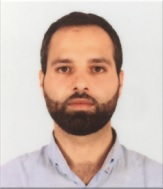

Volunteering:

- Member and vice chairman of Al-Adnan Foundation for Humans Rights and excellence 2016 – 2018.
- Coordinator and member at IEEE Arab American University branch 2013-2016.
- Awarded to be Head of Tura Village council for 10 days in coordination with m ministry of local government, February 2014.
- Volunteering as the head of Tura Youth Local Council in my village, from May, 2012 to June, 2014.